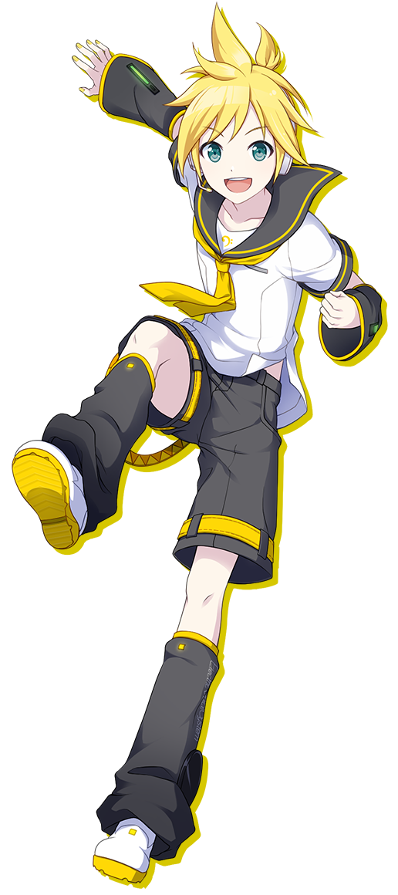
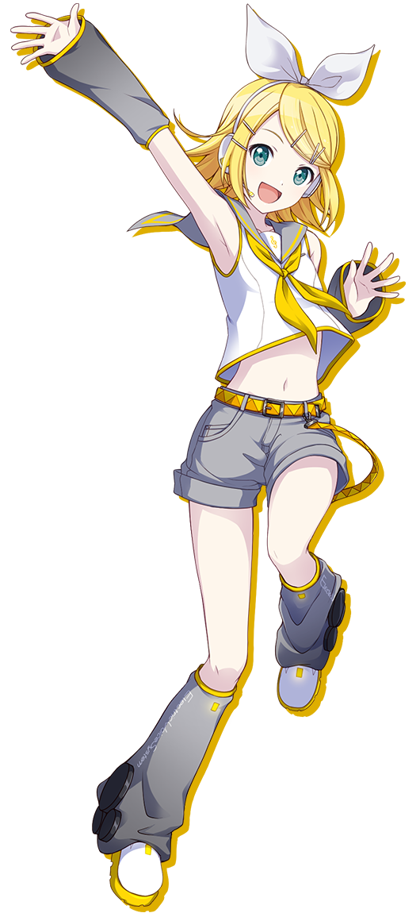

誕生日 8月31日
身長 158cm

誕生日 12月27日
身長 152cm

誕生日 12月27日
身長 156cm

誕生日 1月30日
身長 162cm
誕生日 11月5日
身長 167cm
誕生日 2月17日
身長 175cm

学校 宮益坂女子学園
学年 1-C
趣味 ミクの歌を聴くこと、育てているサボテンを眺める
特技 りんごの皮むき
好きな食べ物 焼きそばパン
嫌いな食べ物 グリーンピース
苦手 絶叫アトラクション
誕生日 8月11日
身長 161cm
学校 宮益坂女子学園
学年 1-C
趣味 ファッション・メイク動画視聴、ビーズアクセサリー作り
特技 ヘアアレンジ、お手玉
好きな食べ物 スナック菓子
嫌いな食べ物 おかゆ
苦手 一人ぼっち
誕生日 5月9日
身長 159cm
学校 宮益坂女子学園
学年 1-A
趣味 好きなガールズバンドのライブに行く、ベースの練習、演奏
特技 書道
好きな食べ物 ラーメン、ハンバーグ
嫌いな食べ物 豆腐
苦手 姉
誕生日 1月8日
身長 159cm
学校 宮益坂女子学園
学年 1-B
趣味 飼い犬の散歩、家庭菜園
特技 家事全般、水泳
好きな食べ物 アップルパイ
嫌いな食べ物 チーズ
苦手 絵を描くこと
誕生日 10月27日
身長 166cm
学校 宮益坂女子学園
学年 1-A
趣味 振りコピ、日記をつけること、動物の世話
特技 キャッチフレーズをつけること
好きな食べ物 サーモン
嫌いな食べ物 ブロッコリー
苦手 落ち着いた行動
誕生日 4月14日
身長 158cm
学校 宮益坂女子学園
学年 1-C
趣味 ペンギングッズ集め
特技 バスケットボール
好きな食べ物 甘いもの全般
嫌いな食べ物 ワサビ
苦手 怠けること
誕生日 10月5日
身長 163cm
学校 宮益坂女子学園
学年 2-D
趣味 アイドル研究、ショッピング
特技 料理、子供の面倒を見ること
好きな食べ物 和菓子
嫌いな食べ物 レバー
苦手 ネコ（アレルギー）
誕生日 3月19日
身長 156cm
学校 宮益坂女子学園
学年 2-D
趣味 読書、散歩
特技 弓道、刺繡
好きな食べ物 うどん、湯葉
嫌いな食べ物 辛いもの全般
苦手 地図を読むこと、機械の操作
誕生日 12月6日
身長 168cm
学校 宮益坂女子学園
学年 1-A
趣味 父親が飼っているヘビのお世話
特技 写真
好きな食べ物 桃まん、ごま団子
嫌いな食べ物 酢の物
苦手 人前に立つこと
誕生日 3月2日
身長 156cm
学校 神山高校
学年 1-A
趣味 ミント栽培
特技 コーヒーや紅茶を淹れること
好きな食べ物 ラムレーズンのアイス
嫌いな食べ物 トマト
苦手 幽霊、怪談話
誕生日 7月26日
身長 160cm

学校 神山高校
学年 1-C
趣味 ファッションコーディネート
特技 ヒューマンビートボックス
好きな食べ物 パンケーキ、チーズケーキ
嫌いな食べ物 にんじん
苦手 犬
誕生日 11月12日
身長 174cm

学校 神山高校
学年 1-B
趣味 読書
特技 ピアノ、バイオリン
好きな食べ物 コーヒー、クッキー
嫌いな食べ物 イカ
苦手 高い所
誕生日 5月25日
身長 178cm
学校 神山高校
学年 2-A
趣味 ミュージカル観劇、衣装づくり
特技 どんな時も即カコいいポーズができる、ピアノ
好きな食べ物 アクアパッツァ、生姜焼き
嫌いな食べ物 ピーマン
苦手 虫（特に多足）
誕生日 5月17日
身長 172cm
学校 宮益坂女子学園
学年 1-B
趣味 ご近所探検
特技 アクロバット、なんでも美味しく食べられる
好きな食べ物 鯛焼き
嫌いな食べ物 なし！
苦手 夕暮れ
誕生日 9月9日
身長 152cm
学校 神山高校
学年 1-B
趣味 対戦ゲーム、ミュージカル・映画鑑賞
特技 歌、機械の操作全般
好きな食べ物 グレープフルーツ
嫌いな食べ物 ミント味の食べ物
苦手 人通りの多い場所
誕生日 7月20日
身長 156cm
学校 神山高校
学年 2-B
趣味 ショーの演出を考えること、バルーンアート
特技 発明
好きな食べ物 ラムネ菓子
嫌いな食べ物 野菜全般
苦手 掃除、単純作業
誕生日 6月24日
身長 180cm
学校 通信制高校
学年 -
趣味 音楽を探して聴くこと、映画や漫画、アニメ、美術作品を見ること
特技 感覚で時間を計れる
好きな食べ物 カップ麵、缶詰
嫌いな食べ物 パクチーや納豆など、においが独特な物
苦手 直射日光、家事全般
誕生日 2月10日
身長 154cm
学校 宮益坂女子学園
学年 2-B
趣味 アクアリウム
特技 英会話
好きな食べ物 お母さんの手料理
嫌いな食べ物 わからない
苦手 わからない
誕生日 1月27日
身長 162cm
学校 神山高校（夜間定時制）
学年 2-D
趣味 絵を描くこと、自撮り＆SNSにアップロード、エゴサーチ
特技 ファッションの小物のリサーチ、料理の食材当て
好きな食べ物 パンケーキ、チーズケーキ
嫌いな食べ物 にんじん
苦手 朝起きること
誕生日 4月30日
身長 158cm
学校 神山高校
学年 1-A
趣味 動画素材集め、コラージュ
特技 洋服のアレンジ
好きな食べ物 カレーライス、フライドポテト
嫌いな食べ物 きのこ系
苦手 熱い食べ物
誕生日 8月27日
身長 163cm